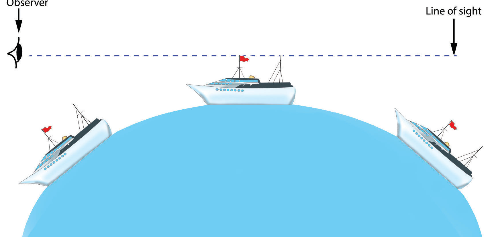
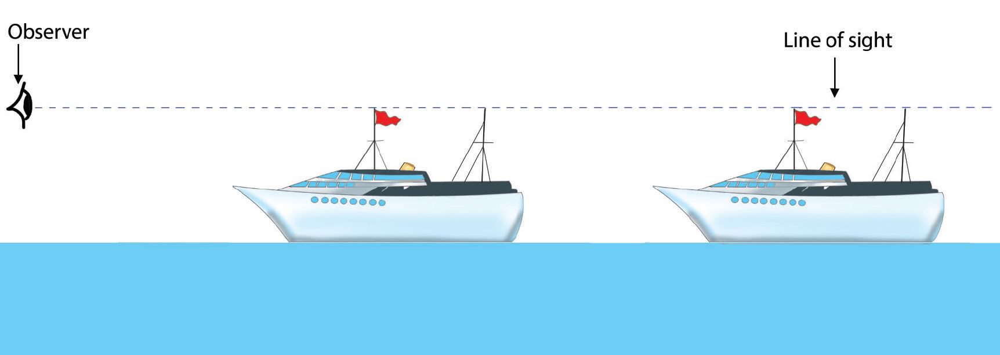

(iv) Ship’s visibility
When watching an arriving ship from the coast, the visibility of the ship, which is far away, starts with the flag, then the mast, and eventually the whole ship is seen as it approaches the coast. When the ship moves away, it gradually disappears starting with the ship, then the mast, and finally the flag. If the Earth was flat, the whole ship would appear or disappear at once (Figure 2.7 a and b).

Observer
Line of sight

Observer
Line of sight
Figure 2.7 (a and b): Ship’s visibility on the spherical and flat Earth
17